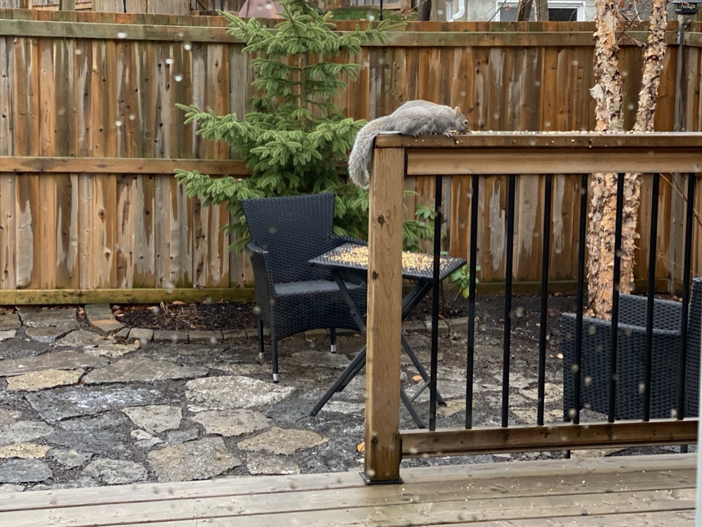

Ph.D. Candidate in Innovation, Technology & Operations
Rady School of Management, University of California San Diego
My research examines how AI systems, including predictive models, large language models, and AI agents, reshape professional work. A central question is how organizations should allocate tasks and decision rights across people and technologies and identify which AI-enabled system is best suited to a particular task. I explore these questions through real-world deployments in healthcare, where clinicians remain accountable and where task demands, information access, workflow design, and verification costs shape the value of AI. Using operational data from deployed systems, I study how organizations can make better choices about technology selection, deployment, system redesign, and post-deployment governance. An earlier version of my job-market paper, which develops this agenda in the context of AI-assisted clinical messaging, received the 2026 Best Student Paper Award at the Conference on Health IT and Analytics (CHITA).
I am on the 2026–2027 academic job market.
Generative AI is increasingly embedded in professional workflows to generate drafts that humans remain responsible for evaluating, revising, or accepting before a task is complete. Yet it remains unclear when these drafts save time, when they impose higher verification costs, and whether organizations can predict this difference before a draft is offered. We address these questions through task–technology fit, proposing that human-in-the-loop generative AI changes the locus of fit. Because the system generates a distinct draft for each task instance, fit varies by interaction, depending on how closely the draft aligns with the final response the professional needs to send. We study this framework in patient portal messaging, where clinicians choose whether to begin from an AI-generated draft or from a blank response field. Using thirteen months of operational data from a large academic medical center, covering 12,030 clinician-message interactions and 369.5 clinician-hours of observed portal response work, we find that AI-draft initiation is associated with an approximately 20% reduction in clinician response time. This association is absent in unadjusted comparisons and emerges only after accounting for within-clinician differences and features observed before response initiation. A clinician-driven twelve-category task taxonomy reveals an ordered gradient: estimated time savings are largest for standardized tasks with reusable phrasing, smaller for tasks requiring patient-specific clinical interpretation, and not reliably observed for laboratory result questions. This boundary reflects an information-architecture constraint rather than model capability alone: when privacy-preserving design withholds result values and case-specific clinical context, the draft cannot reliably fit the task. Finally, a selective draft-offering design based on ex ante predicted fit is associated with reliable time savings in categories where uniform draft offering yields inconclusive estimates, while preserving message and clinician coverage. This study contributes by reconceptualizing task–technology fit for human-in-the-loop generative AI, extending the jagged technological frontier from a task-level boundary to an ordered gradient of interaction-level fit, and showing how information architecture and predicted fit shape selective deployment in professional workflows.
A framework for turning the exhaust of AI deployed in production health systems into rigorous real-world evidence for evaluation and governance.
Outside of research and teaching, I enjoy hiking, spending time in nature, and being around animals. Simba, my adventurous little dog, often joins me on the trail. Sometimes we meet a small visitor along the way, and our backyard has a few regular guests of its own.
